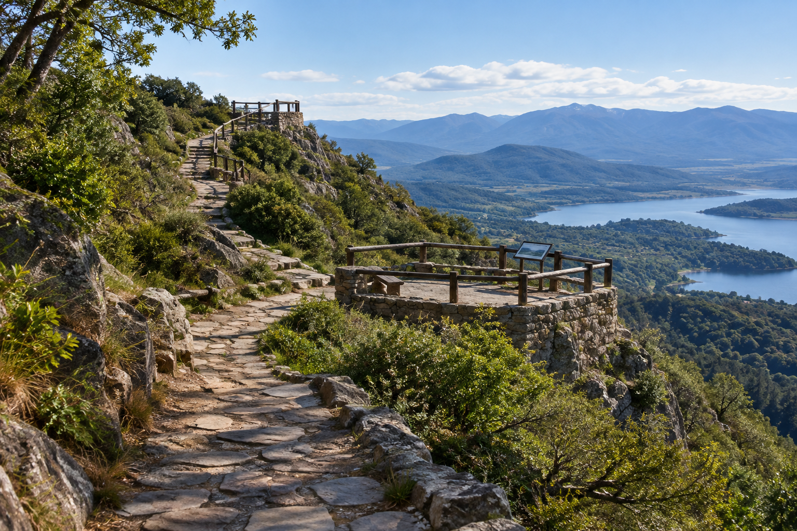
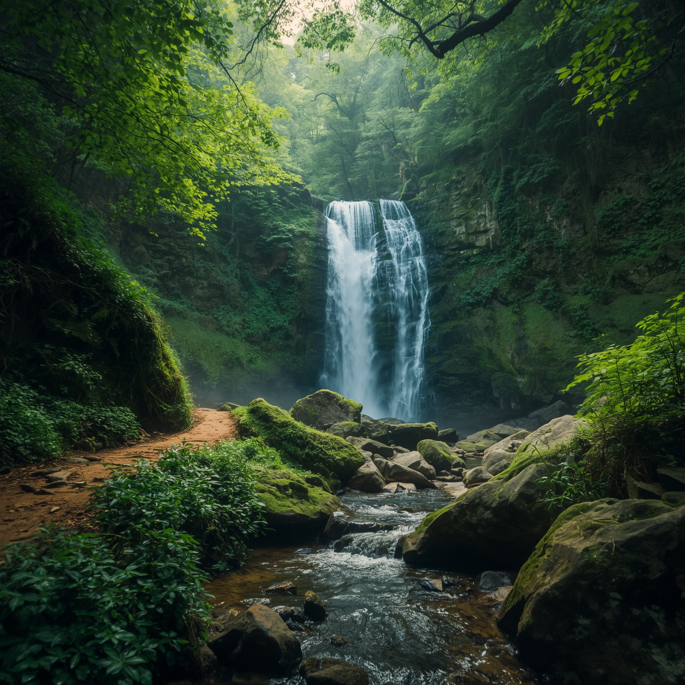
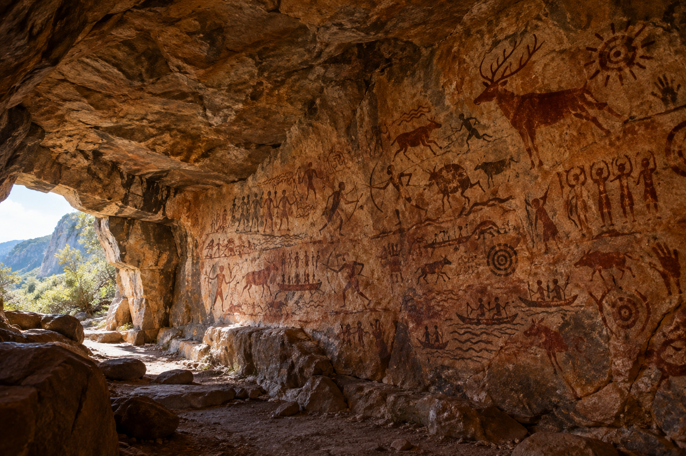
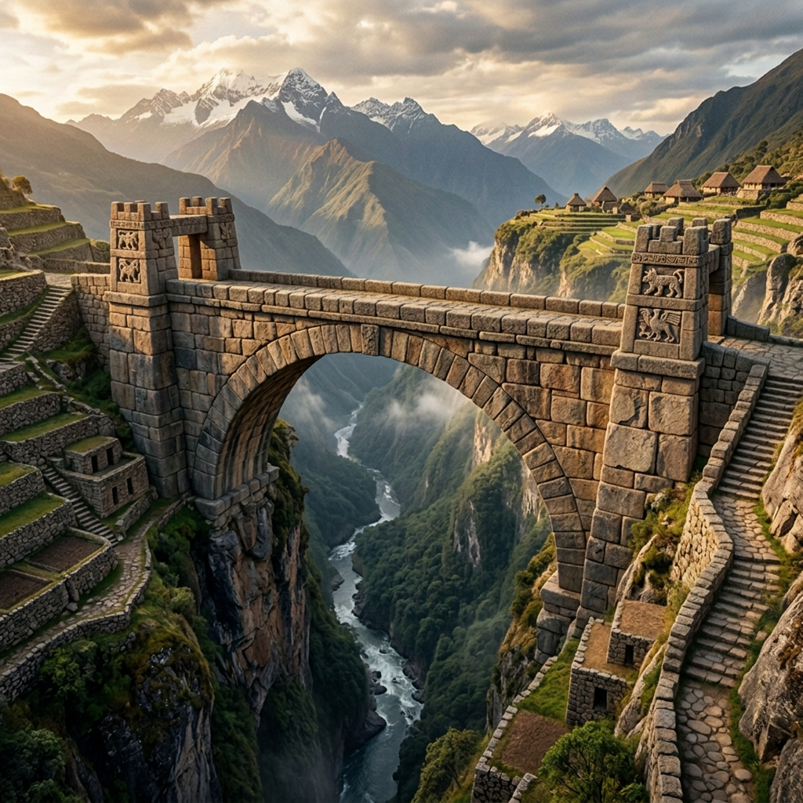

Camino de los Ancestros

¿Que mejor forma de empezar que el Camino de los Ancestros?
Un majestuoso sendero de montaña empedrado que serpentea a lo largo de las elevaciones y cornisas de la sierra.
Equipado con balcón-miradores de piedra y barandas de madera perfectamente integradas en el entorno natural,
este recorrido ofrece espectaculares vistas panorámicas de valles frondosos, un extenso espejo de agua y cordones montañosos en el horizonte.
Es un destino imperdible para quienes buscan aire puro, fotografía de paisaje y el contacto pleno con la naturaleza.
Cascadas de Intiray

Nuestra 2da recomendación es la visita a las Cascadas de Intiray.
Es un rincón natural escondido en el corazón de un frondoso bosque nativo. Una imponente caída de agua pura y cristalina
se abre paso entre rocas cubiertas de musgo y una vegetación exuberante, alimentando un sereno arroyo pedregoso.
Rodeado por un entorno verde y fresco bajo la sombra de altos árboles,
es un sitio idóneo para desconectarse de la ciudad y disfrutar del sonido relajante del agua en movimiento.
Cueva de los Petroglifos

Nuestra 3ra recomendación es un lugar imperdible: la Cueva de los Petroglifos.
Es un fascinante refugio rupestre milenario que conserva en sus paredes de piedra auténticas pinturas e inscripciones de antiguos pobladores en tonos ocre y terracota.
Sus aleros rocosos exhiben escenas de caza, figuras humanas, animales autóctonos, embarcaciones y símbolos solares.
Iluminada de forma natural por la luz que ingresa a través de la gran abertura de la caverna,
es un yacimiento arqueológico e histórico imperdible para conectar con las raíces ancestrales de la región.
Puente de piedra de Amaru

Por último, nuestra 4ta recomendación es el Puente de piedra de Amaru.
Es una monumental e imponente obra de ingeniería y arquitectura ancestral construida en piedra,
que cruza majestuosamente un profundo cañón sobre un río serpenteante. Rodeado de terrazas agrícolas tradicionales en las laderas,
empinados escalonamientos de piedra y picos montañosos en el horizonte, este sitio ofrece una postal inolvidable donde la historia se funde con la grandiosidad del paisaje natural.